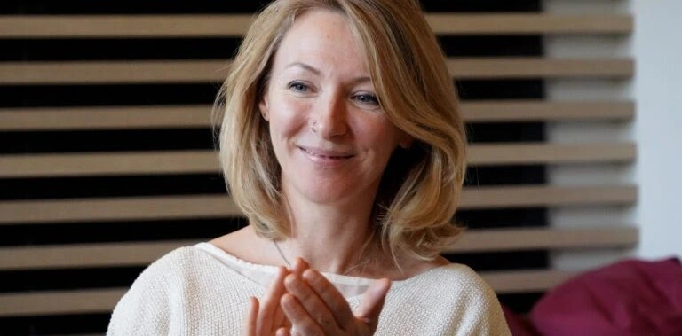
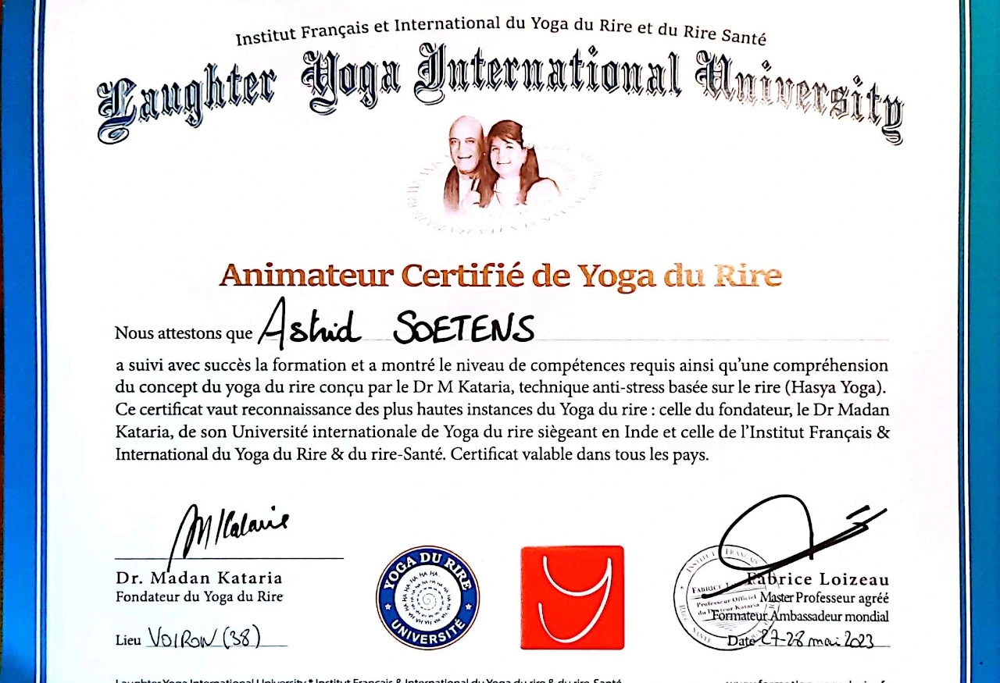
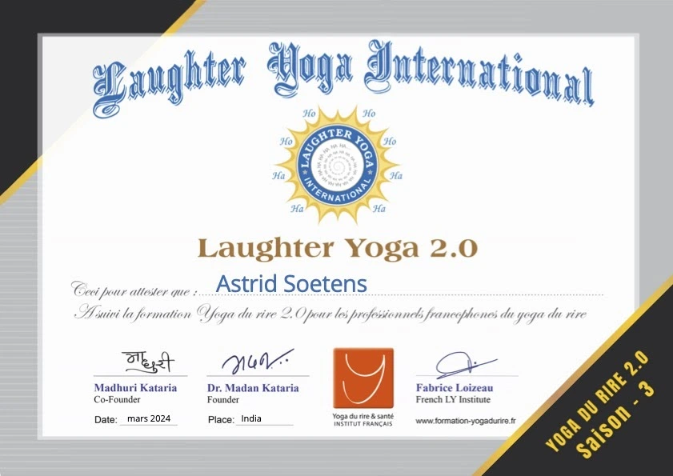

Bonjour,
Mon parcours professionnel est à l'origine l'enseignement de la langue anglaise, auprès de publics de tous âges, des enfants aux adultes retraités. Au fil des années, j'ai pris conscience de l'importance du contact social. J'ai constaté que les participants apprécient mes cours car on y rit souvent et on passe un bon moment ensemble.
Cette dimension sociale est devenue une composante essentielle de ma pratique, au delà de l'aspect purement instructif.
C'est en observant l'impact positif de réunir les gens et de leur offrir un espace de convivialité et de bonne humeur que j'ai voulu intensifier cette expérience. Je me suis donc formée au yoga du rire.
Aujourd'hui, en tant qu'animatrice de yoga du rire, je suis heureuse de pouvoir apporter du bien-être avec une activité simple et accessible à tous.
Astrid
Formations & Certifications


Envie d'échanger avec moi ?
Je serai ravie de répondre à vos questions et de vous accueillir lors d'une séance.
Me contacter